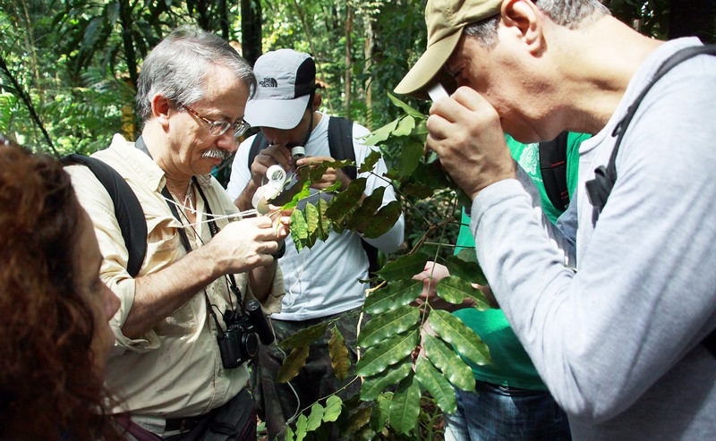

Quem Somos?
Nossa Missão, Visão e Valores
Nossa Missão
Queremos ser a principal referência online para informações sobre ervas daninhas, promovendo práticas sustentáveis de manejo e controle.

Nossos Valores
- Compromisso com a qualidade e precisão das informações
- Respeito ao meio ambiente e práticas sustentáveis
- Inovação contínua no campo da agricultura e jardinagem
- Transparência e honestidade em todas as interações
Nossa Equipe
Nosso site foi fundado por apaixonados por botânica e agricultura, com o objetivo de compartilhar conhecimento e experiência sobre ervas daninhas. Conheça alguns de nossos colaboradores:
- Fulano de Tal - Fundador e Especialista em Botânica
- Ciclana da Silva - Especialista em Manejo Integrado de Pragas
- Beltrano Pereira - Consultor Agrícola